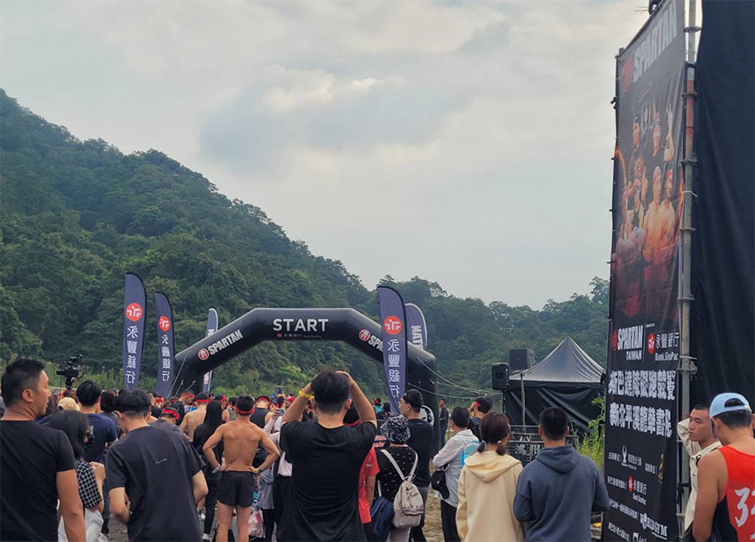
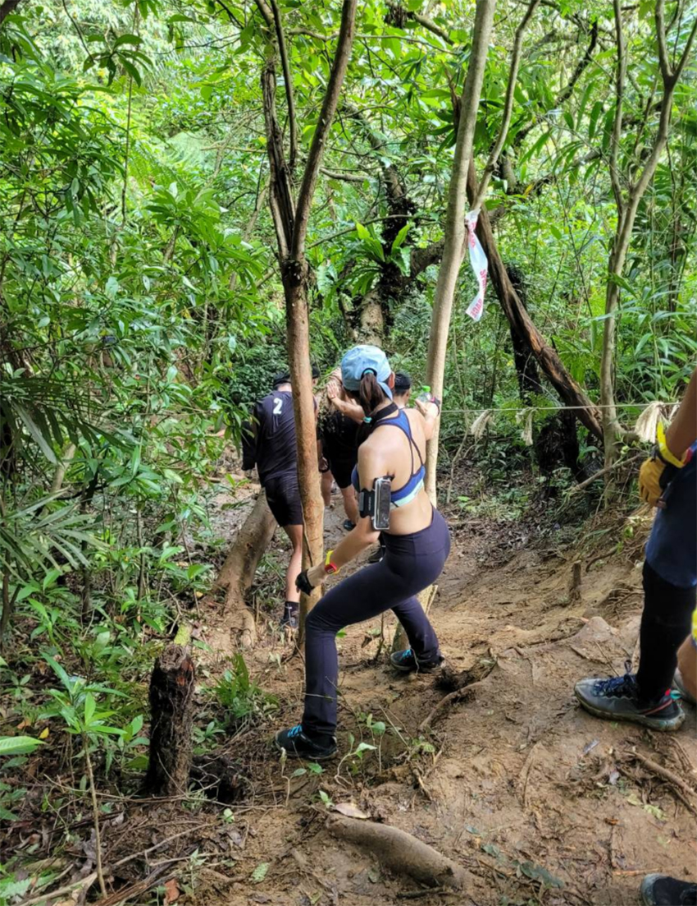
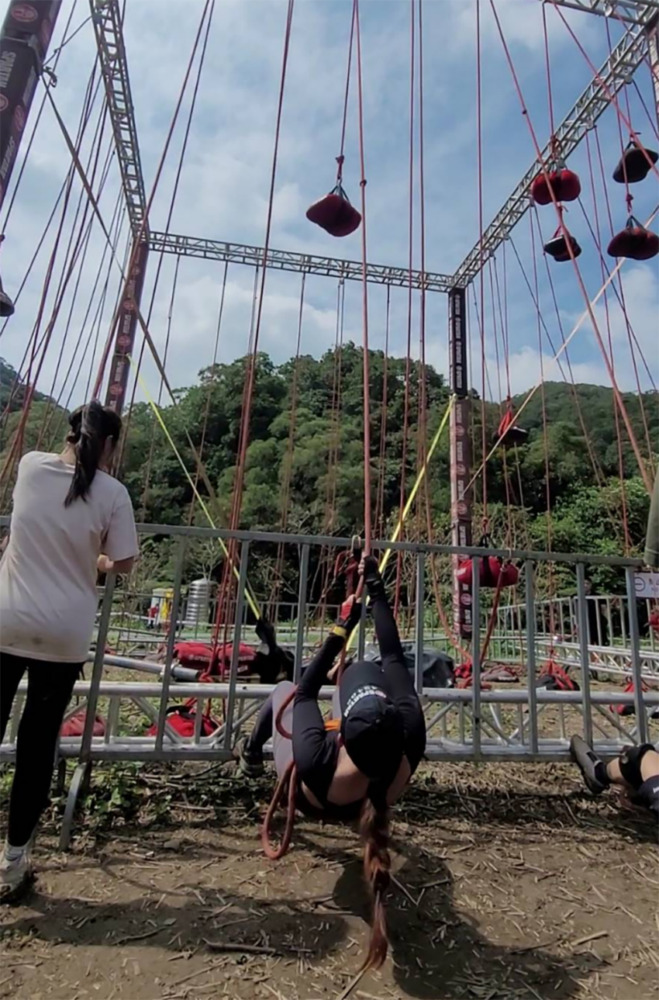
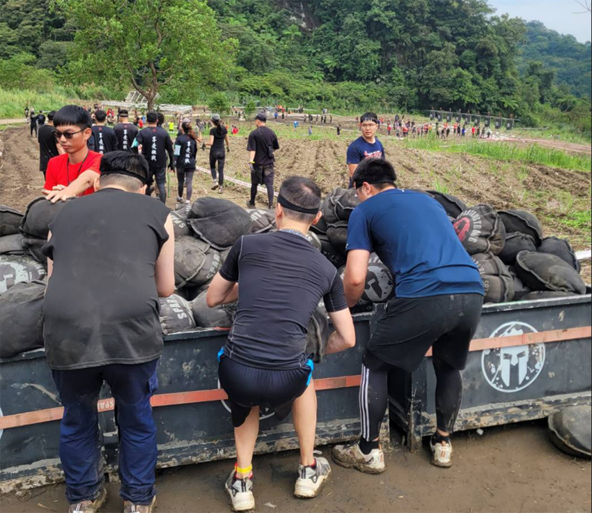
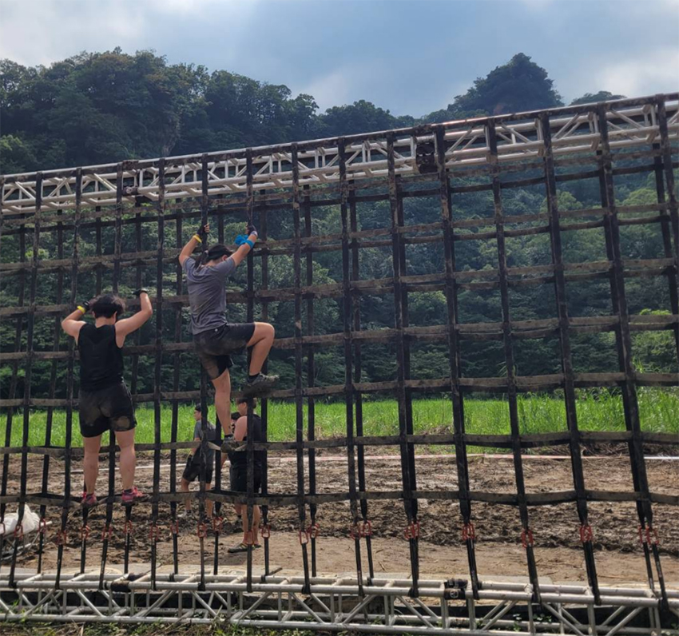
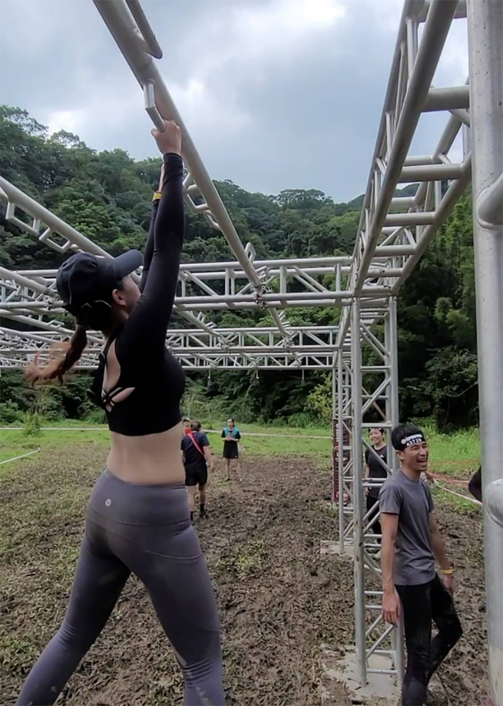
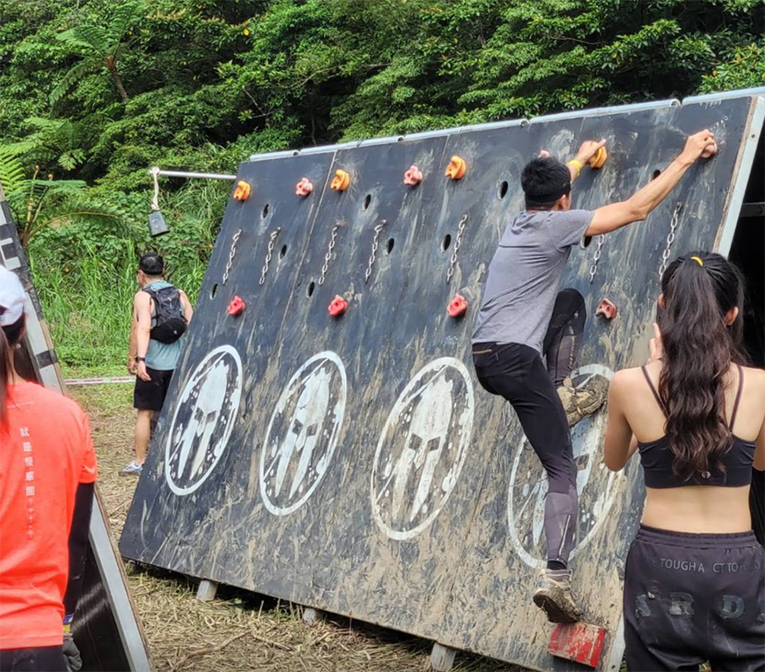
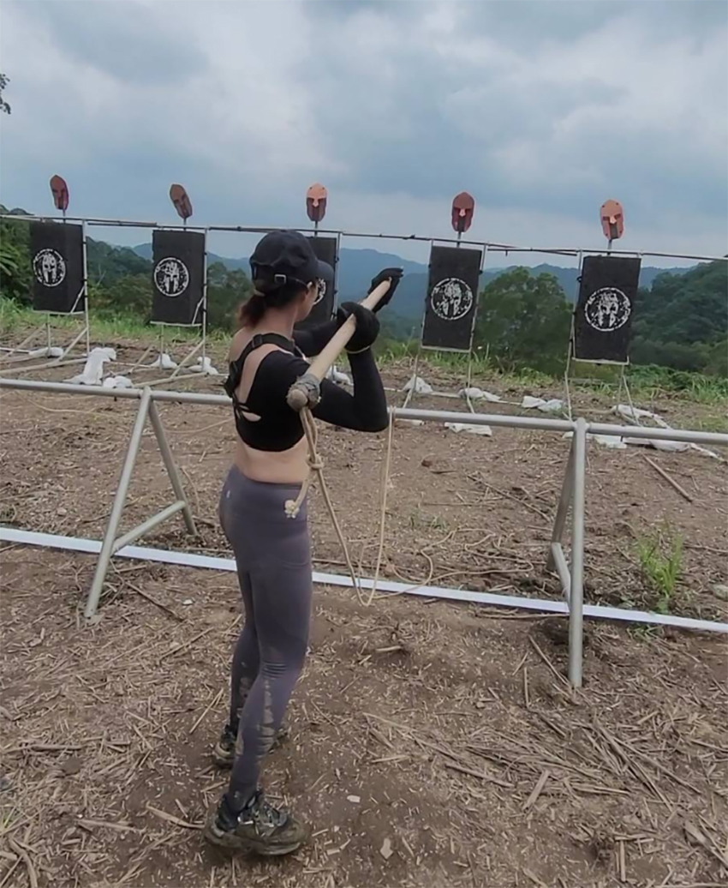
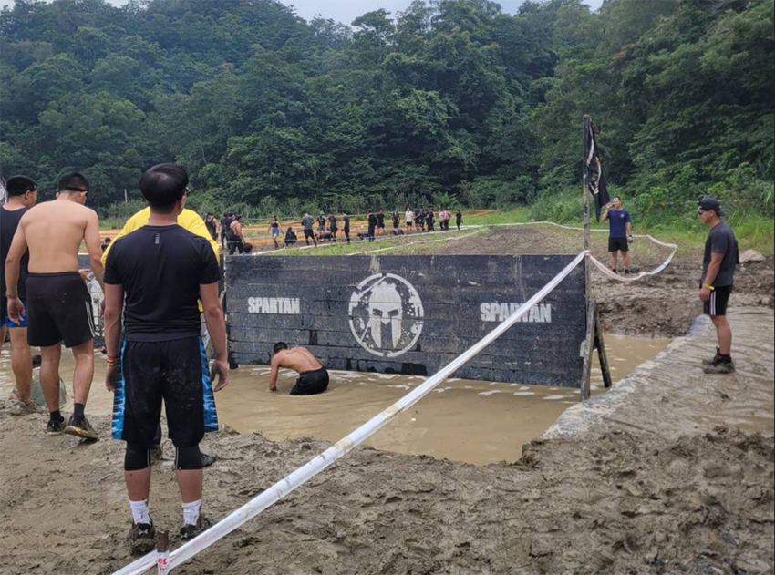
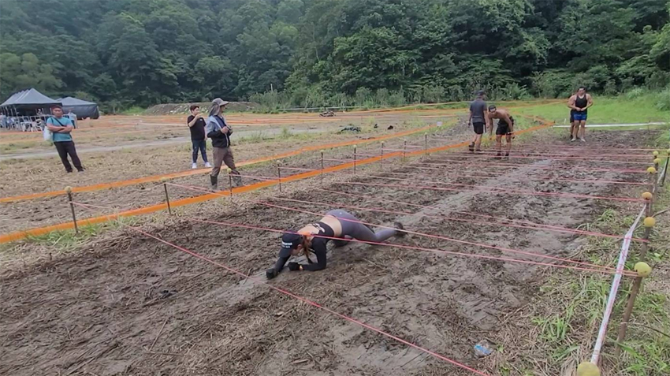

|  |
一開始認識斯巴達障礙賽是去年朋友參加活動後看了內容，也想挑戰看看。斯巴達障礙賽有四種挑戰內容，Ultra超獸賽是50km有60項障礙，Beast野獸賽是21km有30項障礙，Super超級賽是10km有25項障礙，及Sprint衝刺賽是5km有20項障礙。
今年一開放就報名了，以早鳥報名參加Super超級賽10km，比賽前很緊張，第一次參加就挑戰10km，很怕自己沒體力到達終點。
|  |
10/15比賽當天地點在台北平溪山上，早上9:30的比賽天氣多雲微涼，比賽前要先跨越柵欄，時間一到參賽者開始跑起來，開始的第一個關卡是上翻牆、下蹲過檔板、中洞穿越，再來是一段上下坡的山路，路線除了草外都是泥巴地，用慢跑鞋走起來超滑，所以也不敢走快，好不容易過完3km的泥巴地，接下來是公路的上下坡，雖然好走多了但腿已經酸了，再經歷上坡真的非常痛苦，又好不容易走到下坡卻是長滿青苔的石頭階梯，怕滑倒每一步都變得很吃力，腳都會抖了，終於結束一連串的跑山，開始剩下的障礙關卡。
|  |
第三個障礙賽是拉繩爬坡，再來是爬繩到頂端拍鈴才算成功，這對我來說是輕鬆的，因為空中瑜伽綢吊讓我會學到怎麼上爬綢布，相同的技巧但比平常高有點讓人害怕，再來是拉沙包，需要整個身體往下的力氣把沙包拉到上面，其實拉上去很快，我認為難在要再輕放回地面，很怕繩子太快把手磨破，雖然很小心但因帶半截手指套，沒保護的地方還是磨破了。
|  |
部分關卡大同小異，像拉或拖重物、抱鉛球饒一圈、扛沙包、扛裝砂石的桶子，這些都有分男女生，像鉛球女生35kg，男生50kg。
|  |
還有各種翻越關卡，有高有低，上去方式也都不同，有的要先爬上斜坡才能上爬再翻越；也有反向斜坡要更多的比例跟核心力量；還有的很高要想辦法跳起來再努力把腳跨上去；立式上爬也有，上去都會怕，因為有些是沒有保護軟墊的，掉下來非常危險。
|  |
還有部分是單槓類的，第一個遇到的是拉一般相同間距的鐵條往前，意外的抵達終點，本來一度以為撐不過；第二是中軸會轉動的拉桿，一開始拉法錯誤不知道怎麼前進放棄，若側身前進就有機會到終點；最後是盪圓環中間變鐵條，切換失敗，太累就沒再試了。
|  |
攀岩類的項目，有兩個一個很簡單，手握柱跟腳踩柱的立式木板，會經過兩次轉彎，但因為腳柱跟鞋子都是泥巴很滑，所以大部分是用手撐過終點的；另一個沒挑戰成功，是手握凹洞或攀岩石，腳踩斜板到對邊，但也是板子有太多泥巴，會一直滑腳失敗。
|  |
我覺得難的是射標槍，瞄不準也不知道怎麼出力，如果可以射成功會很有成就感。
|  |
再後面的關卡就是髒兮兮挑戰，在泥地上匍匐前進或是髒水裡前進，甚至泡在髒水里穿越擋板，基本上沒甚麼困難就是願不願意，最後是過火堆，在別人看來應該是最簡單的，但有心理障礙覺得好可怕可能很燙很危險，結果第一次卻步腳卡在泥巴嚇到，再試第二次就撞倒火堆跌倒了，還好沒受傷褲子也沒著火。
|  |
挑戰完成到現在都讓我意猶未盡，斯巴達初體驗很好玩很有挑戰性，也很有成就感，下次一定要再報名，但下次只想報名Sprint 5km，Super10km只是跑山路比較多，那段跑山路對我來說太痛苦了，還沒到障礙關卡都快耗盡體力了。
歡迎大家相約一起報名，一起比賽互相鼓勵和協助都是過程中很棒的地方。